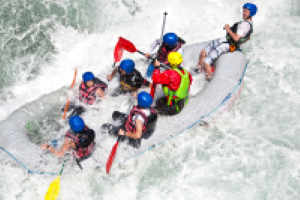
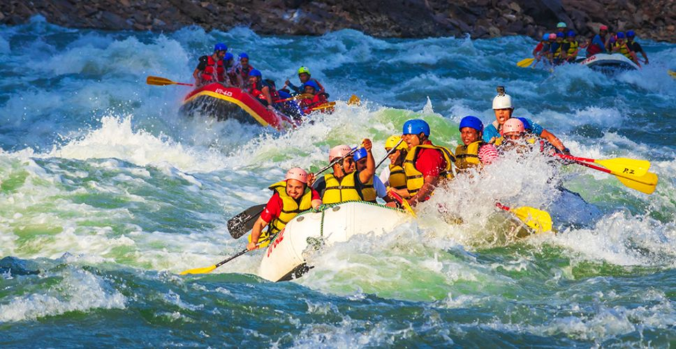
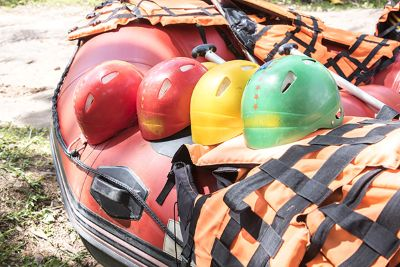
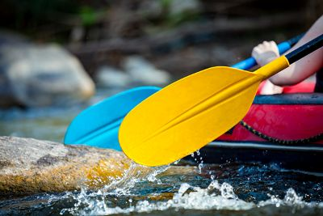
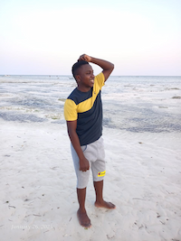
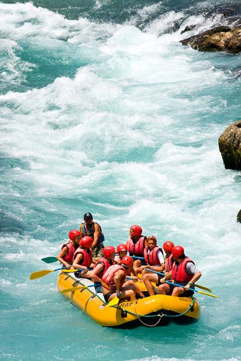

Our purpose is to provide thrilling, safe, and unforgettable white water rafting adventures for everyone. We believe in teamwork, adventure, and respecting nature. Our mission is to create memories that last a lifetime on the river.


Our purpose is to provide thrilling, safe, and unforgettable white water rafting adventures for everyone. We believe in teamwork, adventure, and respecting nature. Our mission is to create memories that last a lifetime on the river.
White water rafting started in the early 1800s to explore rivers and move goods. It became a sport in the 1940s using rubber rafts, and by the 1970s it grew into a popular adventure activity enjoyed around the world today.

Today, white water rafting is enjoyed all around the world, from the Colorado River in the USA to the Zambezi River in Africa, as a fun and exciting way to experience nature.



